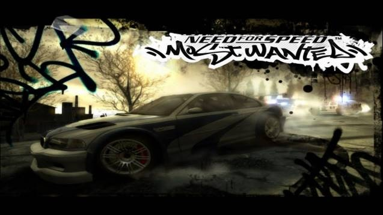

FEATURED · BLACKLIST #01
FEATURED VIDEO.
A short description and source credit explain the selected game moment and its place in the story.
FEATURED VIDEO / 01
Razor's Intro
A rival file from the Blacklist archive. Review the opening, then follow the car and driver records through Rockport.
Opening frame
A still from the opening sequence that sets the Rockport story in motion.
Razor's Intro
A Blacklist rival intro from the local game-video archive.

Rockport menu
Menu artwork from the original game archive.

BMW M3 GTR
The getaway car, documented across the vehicle dossier and gallery.

Razor profile
Blacklist #01 · rival record and vehicle file.

PS2 disc (2005)
Original physical media represented in the collection.
NO ARCHIVE ITEMS MATCH THAT SEARCH.
Keep following the trail through the rival records and the streets of Rockport.
OPEN BLACKLIST ARCHIVE ↗